芯片是怎么造出来的
从一片硅片到成品芯片：五道核心工序全解
费曼式科普 · 原理图解 · 产业链与核心公司
整理自一次系统性问答 · 2026 年 7 月
导读
这份文档把一场关于“芯片制造”的系统性问答，重新梳理成了一份有逻辑、可通读的科普手册。它回答一个核心问题：一片光滑的硅片，是如何一步步变成一颗装在手机、电脑、GPU 里的芯片的。
全文遵循“费曼小白”的讲解风格——先用大白话和生活比喻讲清“是什么、为什么”，再上专业术语和数据；能对比的地方用表格呈现；每一道工序都配了原理示意图，并串上该环节的关键材料、设备与核心公司。读完你会建立起一个完整的框架：芯片制造的本质，是在指甲盖大的硅片上“一层一层盖摩天楼”，靠五道工序循环几十次堆叠而成。
文档共分六个部分：第一部分讲整体逻辑；第二到第五部分依次拆解薄膜沉积、光刻、刻蚀、抛光/清洗检测这五道工序；第六部分把全流程的产业链、名词与投资逻辑做成速查总表。文中引用的具体数据与事实，均在文末“资料来源”中标注出处。
目录
第一部分 总览：芯片制造像盖一栋微观摩天楼
1.1 一句话本质：在硅片上一层层盖楼
造芯片不是“加工一块石头”，而是在指甲盖大的硅片上，一层一层地盖微观摩天楼。硅片是空白的“地基”，每盖一层电路都要走一套固定动作：铺一层新材料（薄膜沉积）→ 用光印出图案（光刻）→ 刻掉多余部分（刻蚀）→ 把表面磨平（抛光）→ 洗净并检查（清洗与检测）。
最关键、也最反直觉的一点是：这五道工序不是“走一遍就结束的五个步骤”，而是一套会循环重复几十次的小套路。每循环一次叠加一层电路，几十层堆叠起来，最后切割、封装，才是一颗成品芯片。
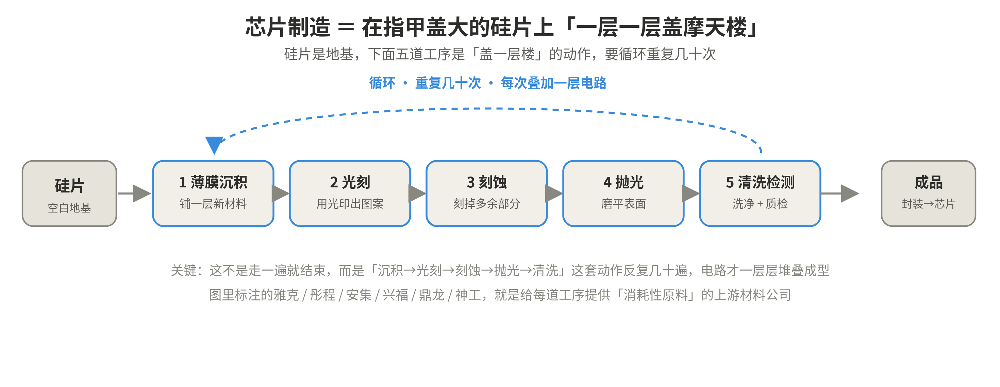
图 1 芯片制造总流程：硅片经五道工序循环几十次，堆叠成芯片成品
原始问题里那张产业链图上标注的雅克、彤程、安集、兴福、鼎龙、神工等公司，就是给每道工序提供“消耗性原料”的上游材料厂商——这是贯穿全文的一条投资线索。
1.2 把芯片“竖着切开”，看每道工序在做什么
如果把芯片竖着切开看剖面，五道工序的动作就一目了然：薄膜沉积是“加法”，在表面铺满一整层新材料；光刻是“印图案”，用光透过掩膜把电路图印到感光胶上；刻蚀是“减法”，把没有被胶保护的部分刻掉，留下电路形状；抛光把坑洼磨平；清洗与检测洗净并查缺陷，准备叠下一层。
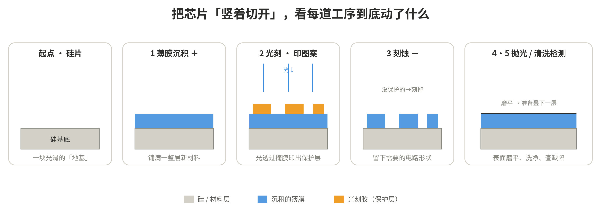
图 2 五道工序剖面：加料、印图、刻形、磨平、洗净的连续动作
1.3 循环与多层堆叠：不换硅片、不覆盖旧层、上下用通孔连通
很多人会困惑：盖下一层，不会把之前做好的电路覆盖毁掉吗？是不是又换了一片新硅片？答案是：从头到尾都是同一片硅片，不换；新层是故意盖在旧层之上的，而且不会破坏旧层。
原因有三：其一，旧层做完后材料已经固化成实体结构，盖新层只是在它“上方”加东西，就像盖好一楼再盖二楼；其二，每一层的刻蚀只咬掉“这一层刚铺上去的薄膜”，刀不会往下挖到旧层；其三，上下层是“故意连通”的——通过垂直的“通孔（via）”像楼梯/电梯一样把各层接通，最终形成一栋上下贯通的立体电路大楼。
至于“刻完变得坑坑洼洼怎么办”，正是第四道抛光来解决：先填一层绝缘材料补平沟壑，再磨成镜面，于是下一层又有了干净平整的表面可盖。补充一个尺度概念：一片圆圆的大硅片上其实同时并排盖着几百颗芯片，最后切开就是几百颗。
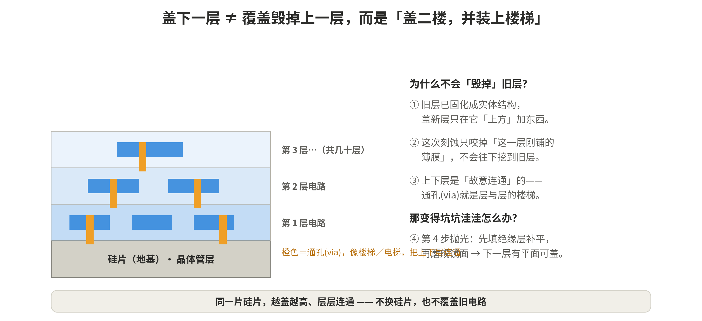
图 3 多层堆叠：同一片硅片越盖越高，旧层不毁、上下用通孔连通
1.4 存储与逻辑、GPU 与存储：为什么都利好上游
存储芯片（DRAM、NAND）和逻辑芯片（CPU、GPU）不是父子关系，而是“兄弟关系”——都是硅片上用晶体管做的集成电路，但分工不同。下表对比二者：
| 维度 | 逻辑芯片（CPU/GPU） | 存储芯片（DRAM/NAND） |
| 功能 | 负责“算”，复杂逻辑门互联 | 负责“记”，海量相同单元排列 |
| 追求 | 运算性能、金属互联层数 | 容量、密度、电容 |
| 制造 | 同一套五道工序 | 同一套五道工序 |
| 代表难点 | 先进制程 EUV 光刻 | 深沟电容 ALD、3D 堆叠 |
正因为存储和 GPU 都从一片硅片出发、都要走沉积/光刻/刻蚀/抛光/清洗检测这套流程，所以三星等存储厂扩产、英伟达 GPU 需求爆发，都会传导到上游设备（如 ASML、KLA）和材料公司。两个重要修正：其一，英伟达是“无晶圆厂”设计公司，自己不建厂，它的需求推动的是台积电扩产，再传导到设备厂；存储厂则自己建厂买设备。其二，要区分“设备”（一次性资本开支，有周期）与“材料/耗材”（跟着开工率持续消耗，确定性更高）——这正是材料环节被认为“业绩兑现最确定”的原因。
背景数据：当前国产 DRAM 全球市占率仅约 7.67%，远低于中国大陆约 30%–35% 的需求占比，意味着约“四倍”的国产扩产空间（30% ÷ 7.67% ≈ 4）。这是看多存储上游材料的核心逻辑之一，但扩产能否兑现仍受技术、良率、设备、竞争等多重因素影响。
第二部分 第一道工序：薄膜沉积（做加法）
2.1 它是什么：不是“保鲜膜”，而是“结霜”
薄膜沉积就是往硅片表面均匀铺上一整层新材料（金属、绝缘层等）。它像不像一层“保鲜膜”？这个比喻对了一半：它确实极薄（纳米级，有时只有几个原子厚）、且贴合覆盖整个表面。但有两个关键区别：其一，它不是一张现成的膜铺上去，而是从气体里“长”出来的——气态的原子/分子一个个落到表面、凝结堆积成层，更像玻璃上结霜或喷漆一层层积起来；其二，它是电路的“真材料”（将来的导线、绝缘层），不是外面裹的一层包装。
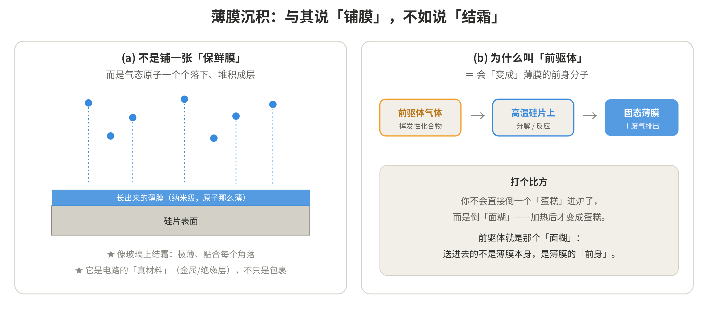
图 4 薄膜沉积原理：像“结霜”一样从气体长出薄膜；前驱体是薄膜的“前身”
为什么叫“前驱体（precursor）”？“前驱”即前导、先行。在化学气相沉积里，送进去的不是固态薄膜本身，而是一种挥发性化合物气体；它飘到高温硅片表面后才分解、反应，留下想要的原子形成固态薄膜，多余的变成废气排走。就像你不会直接倒一个“蛋糕”进烤箱，而是倒“面糊”、加热后才变成蛋糕——前驱体就是那个“面糊”，是薄膜的前身。设计出“常温能当气体运输、一到表面又恰好分解成目标材料”的分子极难，所以壁垒很高。
2.2 两种方法：物理气相沉积（PVD）vs 化学气相沉积（CVD/ALD）
沉积有两大流派。PVD（Physical Vapor Deposition，物理气相沉积）靠“打靶材”把金属原子物理地崩下来落到硅片上，全程没有化学反应，用的是固态“靶材”。CVD/ALD（Chemical Vapor Deposition / Atomic Layer Deposition，化学/原子层沉积）靠气体在硅片上发生化学反应生成薄膜，用的是“前驱体+特气”。ALD 是 CVD 的精细升级版，能一次只长一个原子层。
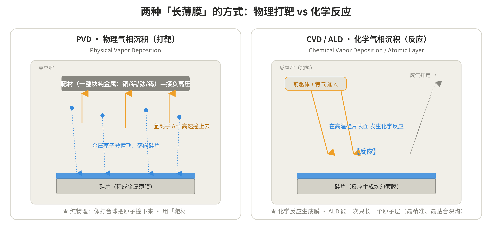
图 5 两种沉积方式对比：PVD 物理打靶 vs CVD/ALD 化学反应
2.3 PVD 溅射的物理：负高压、氩离子、为什么落硅片
先解释几个名词。“电压”可理解成电的“高低落差”，落差越大推力越猛，“高压”就是落差很大。给靶材接“负高压”，就是往靶材上堆大量电子让它带很强的负电——目的正是为了吸引带正电的氩离子（异性相吸）。“氩”是惰性气体（很懒、不反应，免得污染薄膜），“离子”是原子被剥掉电子后带电的状态，氩原子被剥掉一个电子就成了带正电的氩离子 Ar+。
过程是：真空腔里充入少量氩气，电场把氩电离成 Ar+，带负电的靶材把 Ar+ 吸过去、加速撞击。高速撞击靠“动量传递”（像台球母球撞散一堆球）把靶材表面的金属原子“溅射”出来——这就像往湖里丢石头溅起水花。
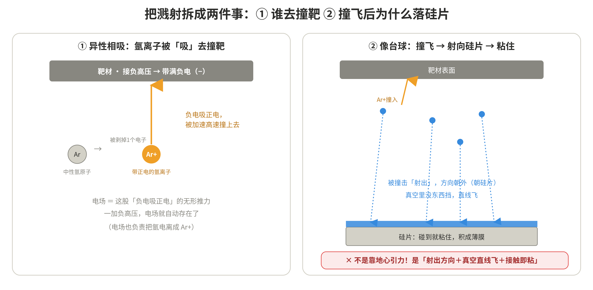
图 6 溅射物理：负高压吸引氩离子撞靶，撞飞的金属原子靠射出方向落到硅片（非重力）
撞飞的原子为什么会落到硅片、而不是乱飘或飞回靶材？关键：完全不是靠地心引力。靠三件事：一是它被“射”出来时带着能量、朝背离靶材的方向（即朝对面的硅片）飞；二是真空里没有别的气体挡路，能直线飞过去；三是碰到硅片表面就“粘”住（吸附凝结）。会有少量原子落回靶材或粘到腔壁（损耗），但因硅片正对靶材且距离近，大头都落在硅片上。至于“电场从哪来”——只要靶材与腔壁之间有电压差，它们之间的空间里就自动存在电场，是这个电压差本身产生的效果，它既电离氩、又推动 Ar+。
2.4 ALD 的“四步循环”：自限制反应，一圈只长一个原子层
ALD 的灵魂是“自限制反应”——每一步铺满一层就自动停下，多了也不会再长。四步循环是：第1步通前驱体 A，A 只在表面贴一层就贴不上去了（挂钩占满即饱和），这就是自限制；第2步吹净，用惰性气体把多余的 A 冲走；第3步通反应气 B，B 和表面那层 A 反应生成最终材料并放出废气；第4步再吹净。一整圈精确长一个原子层（约 0.1 纳米）。
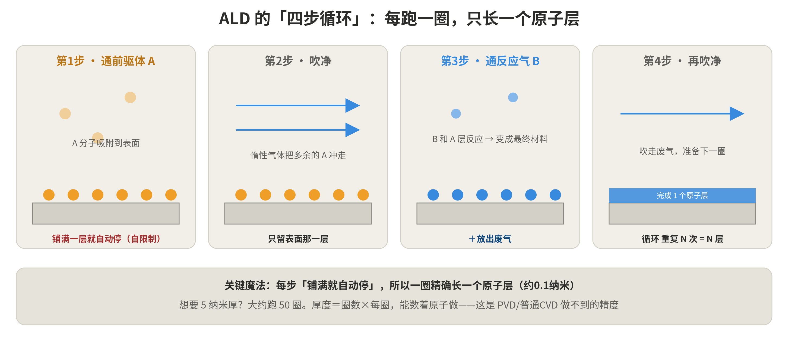
图 7 ALD 四步循环：通 A—吹净—通 B—吹净，每圈只长一个原子层
回答三个常见疑问：A 决定金属是谁、B 决定做成哪种化合物，两者搭配才决定最终的膜（例如做氧化铝 Al2O3：A 用铝源、B 用水；做氮化钛 TiN：A 用钛源、B 用氨气；做纯金属，B 用还原性气体如氢气）。A 是“金属源前驱体”，B 是“反应搭档”（氧化剂/氮化剂/还原剂）。想要 5 纳米厚就跑约 50 圈，厚度 = 圈数 × 每圈厚度，能数着原子做——这是 PVD/普通 CVD 做不到的精度。
2.5 “沟槽”是什么，为什么 ALD 能裹进深沟而 PVD 不行
硅片一开始是平的，但刻蚀会故意在它上面“挖”出又深又窄的坑，这些坑就叫沟槽（trench）和孔（via）。为什么要挖？因为芯片是立体结构：DRAM 的存储电容做成极深极窄的“井”（深宽比可达 50:1）靠深度换取表面积；通孔则是垂直挖穿绝缘层再填钨、连通上下层。
PVD 像“从上往下喷漆”：原子直线飞下，只盖住顶面和孔口，入口很快被堵死、底部和侧壁还光着，钻不进深处。ALD 像“把气体钻进去在每面墙上做化学反应”：气体弥漫到顶面、侧壁、最深的底部，每一处“铺满一层就停”，所以不管深浅都均匀裹上等厚的一层。这种“处处等厚、贴合每个轮廓”的特性叫保形性（conformality），是 ALD 最值钱的本事。
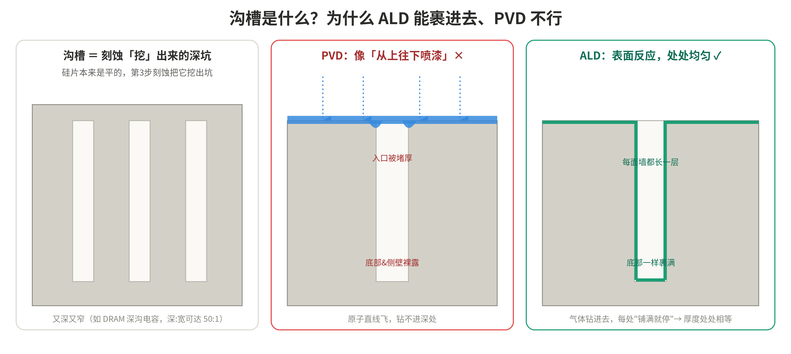
图 8 沟槽与保形性：PVD 喷漆式覆盖会堵口，ALD 表面反应能均匀裹满深沟
2.6 芯片里的金属分工：钨、铜、铝、钛钽各司其职
芯片里的金属不是“随便用一种导电的就行”，而是按“用在哪、要什么性格”来挑。
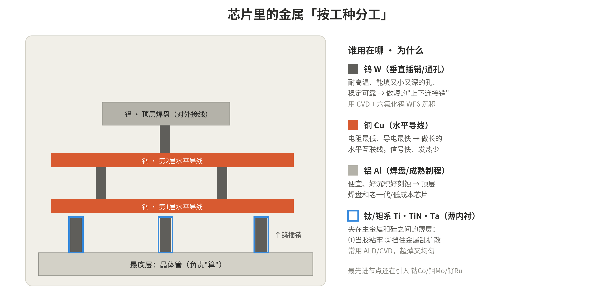
图 9 金属分布图：钨做垂直插销、铜做水平导线、铝做焊盘、钛钽做薄内衬
| 金属 | 用在哪 | 为什么 | 沉积方式 |
| 钨 W | 垂直插销/通孔 | 耐高温、能填又小又深的孔、稳定可靠；短插销电阻高些没关系 | CVD + 六氟化钨 WF6 |
| 铜 Cu | 水平互联导线 | 电阻最低、导电最快、信号快发热少；需钽系阻挡层防扩散 | PVD 种子层 + 电镀 |
| 铝 Al | 顶层焊盘/成熟制程 | 便宜、好沉积好刻蚀 | PVD |
| 钛/钽系 | 薄内衬（阻挡/粘附） | ①当胶粘牢主金属 ②挡住金属乱扩散毒害硅 | ALD/CVD，超薄均匀 |
为什么用六氟化钨 WF6 送钨？它是把钨原子“运”进小深孔的气体载体：WF6 飘进孔里反应（WF6 + 氢气 → 固态钨 + 氟化氢废气），钨留下填满孔。最先进节点因尺寸太小、铜钨电阻变差，业界正引入钴 Co、钼 Mo、钌 Ru 替代部分位置。
2.7 薄膜沉积的核心公司
| 环节 | 公司 | 看点 |
| 沉积设备 | 北方华创（002371） | PVD 国产龙头近乎垄断，兼做多种 CVD |
| 沉积设备 | 拓荆科技（688072） | PECVD/ALD 国产龙头，先进制程放量 |
| 前驱体 | 雅克科技（002409） | 唯一国产化前驱体，全球市占约 15%，供三大 HBM 巨头 |
| 溅射靶材 | 江丰电子（300666） | 国产靶材龙头，全球市占约 22% |
| 电子特气 | 中船特气（688146） | WF6 全球第一梯队、国内超 70% |
| 电子特气 | 华特气体（688268） | 唯一获 ASML 认证，覆盖沉积/刻蚀/光刻气 |
第三部分 第二道工序：光刻（印蓝图）
光刻是整条产线最贵、技术壁垒最高的一环。它本身不增不减材料，只干一件事——决定“图案画在哪”，给下一步刻蚀当模板。
3.1 三步：涂胶 → 曝光 → 显影
第1步涂胶：在硅片上滴几滴液态光刻胶，高速旋转靠离心力甩成超薄超均匀的一层膜（光刻胶是一种“见光会变性”的感光材料，相当于照相的相纸）。第2步曝光：让光透过“掩膜版/光罩”（刻好电路图、有的地方透光有的挡光的玻璃板）照下来，中间镜头把图案缩小约 4 倍再投到硅片上，被照到的胶发生化学变化。第3步显影：用显影液冲洗，把胶按“照没照到光”分开洗掉一部分，留下图案化的光刻胶作为下一步的保护模板；刻完再洗掉。
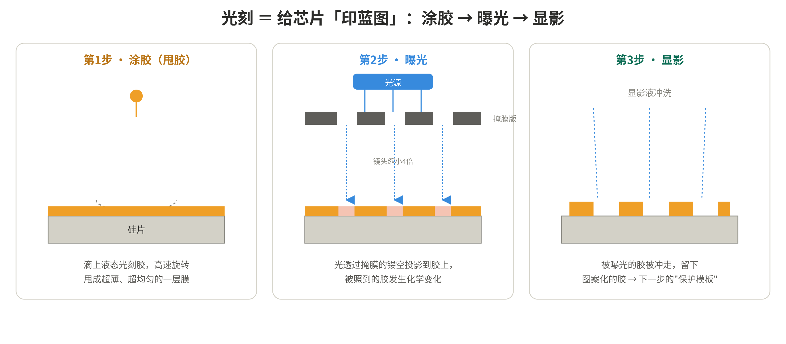
图 10 光刻三步：涂胶（甩胶）→ 曝光（掩膜投影缩小 4 倍）→ 显影（留下图案）
正胶 vs 负胶：正胶“被照到的部分洗掉”，负胶“被照到的部分硬化留下”，原理一样，选哪种取决于想要的图案。
3.2 波长决定一切：从 DUV 到 EUV
光刻能印多小有个铁律：画不出比“笔尖”还细的线，而光的波长就是笔尖的粗细。波长越短，能印的晶体管越小、芯片越先进。于是行业几十年就在把波长一档档往下压。名词上，DUV = Deep Ultraviolet（深紫外），EUV = Extreme Ultraviolet（极紫外）——“深”和“极”都在形容这束光有多短。
| 光源 | 波长 | 档位/能力 |
| g 线 / i 线 | 436 / 365 nm | 早期紫外，微米级 |
| KrF | 248 nm | 深紫外 DUV，250~110nm |
| ArF | 193 nm | DUV 主力，65~28nm |
| ArF 浸没式 193i | 等效更短 | 镜头与硅片间加水提分辨率；配多重曝光做 14/11/7nm |
| EUV | 13.5 nm | 极紫外，7/5/3nm 单次曝光；High-NA 为下一代 |
193nm 卡了很久，于是有两个绝招：浸没式（在镜头和硅片间加一层水，利用水把等效波长进一步缩短提高分辨率）和多重曝光（同一层反复印几次凑出更细的线，这正是上海微电子 28nm DUV 撑到 14/11nm 的办法）。EUV 则是质变的一跃。
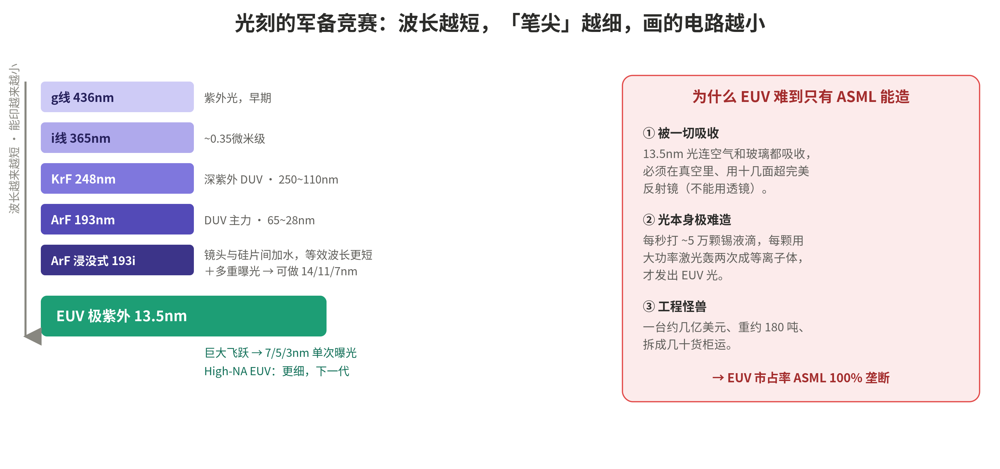
图 11 光刻波长阶梯：波长越短能印越小；EUV 最难，只有 ASML 能造
3.3 EUV 的光是怎么“造”出来的：激光轰锡滴 → 等离子体
EUV 的光本身极难产生。锡是做焊锡的那种金属，把它熔成液体挤成一颗颗微小的液态锡球（直径约 25–30 微米），每秒喷约 5 万颗。为什么选锡？因为锡被打成等离子体后，正好强烈放出 13.5nm 的光。等离子体是物质的“第四态”：气体被加热到极端高温，电子被从原子核上剥下来，变成一锅自由电子+离子的高温“带电汤”，会发光（太阳、闪电、霓虹灯都是）。
流程是：每颗锡滴先被一束较弱的“预脉冲”激光打扁成薄饼（整形），紧接着被大功率“主脉冲”激光轰击，瞬间加热到约 22 万摄氏度变成等离子体，放出 EUV，再由弧形收集镜聚拢送入光刻机。为什么轰两次？因为直接打圆球会把激光能量反射浪费掉，先拍扁再轰能高效吸收、EUV 产出效率翻倍。为什么每秒 5 万次？因为一颗锡滴只闪一瞬，要攒成一束持续、够亮（几百瓦）的光才能量产。
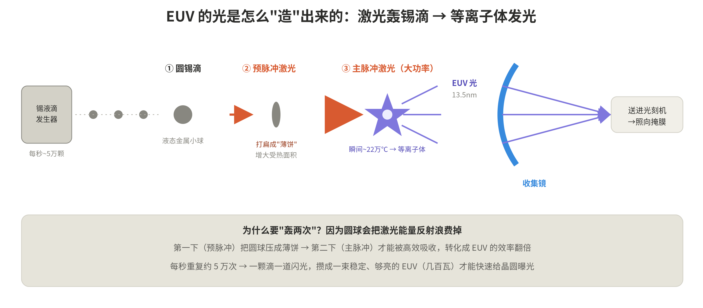
图 12 EUV 光源：激光两次轰击锡液滴，产生 22 万度等离子体发出 13.5nm 光
3.4 EUV 进机器后：反射镜成像、缩小 4 倍
EUV 进机器后有三个反直觉点。其一，只能用镜子不能用透镜——因为 13.5nm 的光连玻璃都吸收，穿不过透镜，只能靠反射一路弹跳。其二，连掩膜也是“镜子”——EUV 的掩膜是多层膜上做出图案，光打上去反射回来带走图案，而非像 DUV 那样穿透。其三，图案缩小 4 倍——掩膜上的图案是实际芯片的 4 倍大，投影镜组把它缩小 4 倍投到晶圆上，这样掩膜更好做、精度要求也松些；掩膜和晶圆还精密同步扫描、纳米级对准。
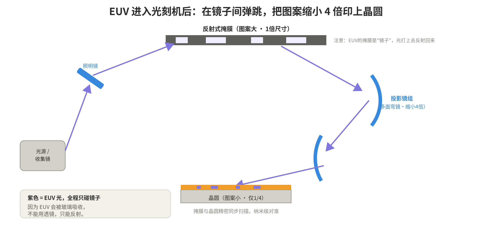
图 13 EUV 光路：光源→照明镜→反射式掩膜→投影镜组，缩小 4 倍印到晶圆
3.5 “超完美反射镜”：几十层薄膜叠加、损耗与平整度
普通镜子反射不了 EUV（连金属镜面都几乎全吸收）。解法是每面镜子镀上约 40–50 层钼（Mo）和硅（Si）交替的纳米薄膜：每层界面只反射极少一点点，但按 13.5nm 间距精确排列后，几十层的微弱反射“同相叠加”，合计能反射约 70%。
由此带来一个大麻烦：每面只反射 70%，而镜子有十几面串联，0.7 的 10 次方约等于只剩约 3% 的光能到达晶圆——辛苦造出的 EUV 一大半在镜子间被“吃掉”，这正是光源要那么猛、每秒打 5 万颗锡滴的原因。此外镜面平整度要求近原子级（皮米量级），蔡司的经典类比：把这面镜子放大到整个德国那么大，最高的“包”也不到 1 毫米。这种镜子全球只有蔡司（ZEISS）能造。
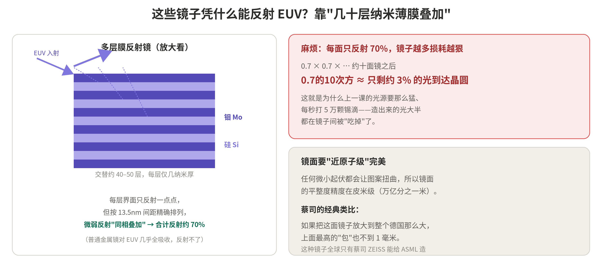
图 14 多层膜反射镜：几十层钼硅叠加反射约 70%；十面镜后仅剩约 3%
3.6 光刻胶：不是一种材料，而是一套“配方”
光刻胶由树脂（成膜骨架，约占成本 40%）+ 光致产酸剂 PAG（决定见光怎么变性，约 20%）+ 电子级溶剂 + 单体/添加剂精确配比而成。它是“卡脖子之王”，因为叠加了三重护城河：配方系统复杂且要随波长（g/i/KrF/ArF/EUV）重做化学；纯度变态（金属离子要控到 1ppb 以下）；连上游树脂和 PAG 也被日本垄断。所以“能做出胶”不等于“自主”，真正难关是把上游原料也国产化。
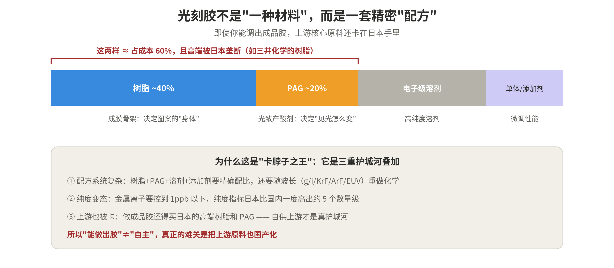
图 15 光刻胶成分：树脂+PAG 约占成本 60%，且高端被日本垄断
3.7 日本为何占 90%，国产化不足 5% 的现状
日本（JSR、东京应化 TOK、信越化学、住友、富士）垄断全球约 90% 中高端光刻胶产能，EUV 档更高达约 95%。原因有五：全产业链最全（连上游原料都握在手里）；高纯度技术壁垒（纯度指标一度比国内高约 5 个数量级，高端树脂要用少数人掌握的阴离子聚合、批次稳定性极难）；客户粘性（换供应商要重跑 2–3 年验证、停线）；专利壁垒（日本占全球光刻胶专利约 46%，TOK 一家握 2000+ 项 EUV 专利）；数十年精细化工积累。
国产规律是“波长越短越高端、国产率越低，且断崖式下降”。2026 年 6 月，日本四大巨头几乎同时对中国客户停接新订单，对日进口量从 2025Q1 约 2200 吨暴跌约 95%、2026Q1 只剩约 111 吨——这记重锤反而成了国产化最强的“倒逼器”，自给率目标被定到从约 10% 拉升到 40%。
| 档位 | 国产率 | 代表公司 |
| g/i 线 | 约 20–25% | 晶瑞电材（G 线第一，G/I/KrF/ArF 全覆盖） |
| KrF 248nm | 约 3% | 彤程新材（国内份额 40%+，KrF 龙头） |
| ArF 193nm | 不足 1% | 南大光电（28nm 量产、推 7nm）、鼎龙股份（浸没式已验证） |
| EUV 13.5nm | 几乎为零 | 日本约占 95% |
上游才是真护城河：徐州博康走“单体→树脂→光酸→成品”全国产路径；八亿时空推进树脂量产。KrF 树脂一旦量产级自供，毛利率可提升 20–30 个百分点。注意华懋科技已明确不再加码光刻胶方向，关注时需剔除。
3.8 光刻的核心公司
| 环节 | 公司 | 看点 |
| 光刻机 | ASML（阿斯麦） | 全球唯一 EUV 厂商，EUV 100% 垄断；High-NA 已量产 |
| 光刻机 | 上海微电子（SMEE） | 国产龙头，28nm 浸没式验证中，EUV 研发；多为概念股映射 |
| 光刻胶 | 彤程新材（603650） | KrF 国产龙头 |
| 光刻胶 | 南大光电（300346） | ArF 国产龙头 |
| 光刻气 | 华特气体（688268） | 唯一获 ASML 认证 |
| 掩膜版 | 清溢光电（688138）/路维光电 | 国产光罩 |
第四部分 第三道工序：刻蚀（做减法/雕刻）
刻蚀和光刻是“黄金搭档”：光刻印图案，刻蚀照着图案把材料真正刻掉——没被光刻胶保护的地方刻掉，保护的留下。它因为绕开了被 ASML 垄断的光刻机，是国产替代做得最好的“典范”环节。
4.1 两大流派：湿法 vs 干法，各向同性 vs 各向异性
湿法刻蚀把硅片泡进化学溶液靠反应溶掉材料，是“各向同性”——上下左右一起刻，会钻到光刻胶下面（钻蚀/undercut），精度差，只用于不关键、大尺寸处。干法刻蚀用等离子体，是先进芯片主流，可做“各向异性”——只垂直向下刻，刻出又深又直的沟槽（DRAM 深沟、3D NAND 深孔就是这么来的）。
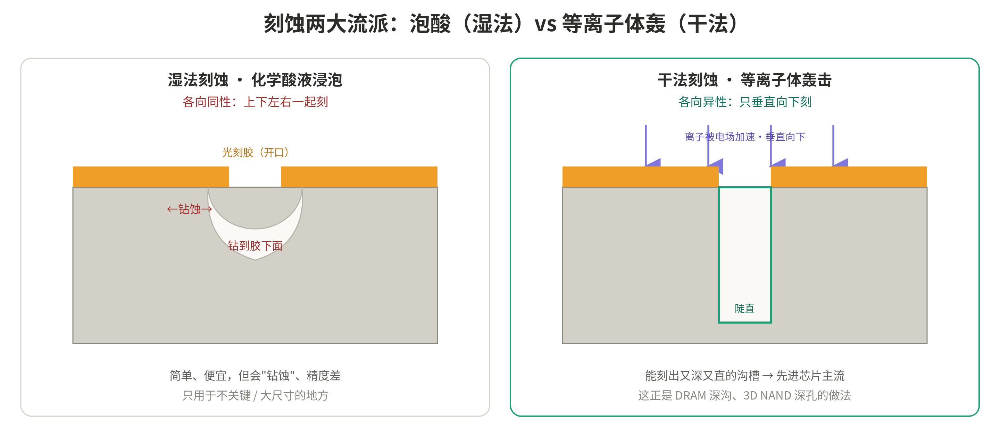
图 17 刻蚀两大流派：湿法各向同性会钻蚀，干法各向异性能刻垂直深沟
4.2 干法刻蚀凭什么“只往下刻”：化学＋物理＋侧壁钝化
等离子体同时干三件事：化学作用（活性基团和材料反应生成挥发性气体被抽走，负责“刻得快”）；物理作用（正离子被电场加速几乎垂直向下，只轰底部不轰侧壁，负责“方向感”）；侧壁钝化（反应生成的聚合物贴在侧壁当“保护漆”，让侧壁不被横向啃掉）。三者合力，既快又直，刻出陡直深沟。这套“化学反应+离子轰击”结合的工艺叫反应离子刻蚀（RIE）。
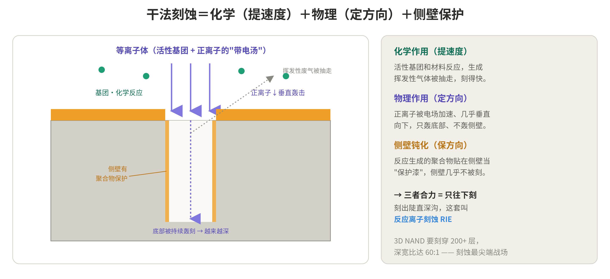
图 18 干法刻蚀机制：化学提速度＋物理定方向＋侧壁钝化 = 反应离子刻蚀 RIE
两个概念：选择比——只刻目标、不伤光刻胶和下层，靠调气体配方实现。CCP/ICP——产生等离子体的两种方式，CCP 离子能量高擅长刻硬介质与高深宽比（中微强项），ICP 密度高、能量可独立调擅长刻硅和金属（北方华创强）。3D NAND 堆 200+ 层要一次刻穿、深宽比达 60:1，是刻蚀最尖端的战场。
4.3 中船特气在刻蚀里的两个角色
中船特气在刻蚀里既是“刻刀”也是“清洁工”。角色一，当刻蚀气体：含氟家族（NF3、SiF4、C4F6、C4F8、HF）刻硅和介质——氟自由基和硅反应生成挥发性 SiF4 被抽走（对应“化学刻蚀提速度”），气体里的碳形成侧壁保护漆（对应“侧壁钝化保方向”），像 C4F6 就是为 3D NAND 超深孔设计的；含氯家族（HCl，配合 Cl2、BCl3）刻金属，Cl 与铝反应生成挥发性 AlCl3。
一个值得吃透的洞察：刻金属为什么用氯不用氟？因为刻蚀能否“刻得动”取决于反应产物能否挥发——铝的氟化物 AlF3 不挥发、赖着不走；铝的氯化物 AlCl3 能挥发被抽走，才刻得动。所以刻硅用氟、刻金属用氯，分界线就是“哪种产物能挥发”。角色二，当腔体清洗气：设备每跑一段腔壁就积残留物，通入 NF3 打成等离子体放出 F 把残留物啃成挥发性气体抽走——这是 NF3 最大的用途，且消耗持续。中船特气 NF3 产能全球第一、纯度 5N。
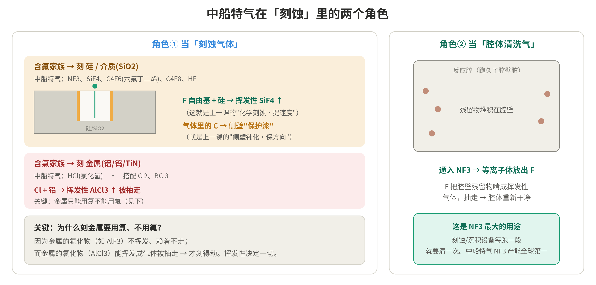
图 19 中船特气在刻蚀里的两个角色：当刻蚀气体（氟刻硅、氯刻金属）与腔体清洗气 NF3
4.4 刻蚀的核心公司
| 环节 | 公司 | 看点 |
| 刻蚀设备 | 中微公司（688012） | 国产刻蚀龙头，CCP 交付 1500+ 台，覆盖 65nm–5nm |
| 刻蚀设备 | 北方华创（002371） | 硅刻蚀/ICP 国内另一极，成熟制程基本替代 |
| 刻蚀设备 | Lam Research（泛林） | 全球龙头，市占约 47% |
| 刻蚀气体 | 中船特气（688146） | NF3 全球第一，兼供 C4F6、HCl 等 |
| 刻蚀气体 | 华特气体（688268） | 全品类刻蚀气体 |
国产化率：成熟制程（28nm 及以上）刻蚀约 50–60%，先进制程仍不足 15%。全球格局“一超两强”：Lam 约 47%、东京电子约 27%、应用材料约 17%。
第五部分 第四、五道工序：抛光 + 清洗与检测（收尾闭环）
抛光、清洗、检测是把“一层”做完、交给下一轮循环的“收尾闭环”三件套：抛光必然产生碎屑污染，所以紧接着清洗，再检测放行，然后回到第一道盖下一层。
5.1 第四道：抛光（CMP 化学机械抛光）
刻蚀完表面坑洼，叠下一层前必须磨到原子级平整（否则下一层光刻对不准焦、误差层层累积）。CMP（Chemical Mechanical Polishing）的精髓是“化学+机械”两手并用：把晶圆面朝下压在旋转的抛光垫上，中间注入抛光液（slurry）；抛光液里的化学成分先把表面软化、轻微反应，磨料颗粒再机械地磨掉凸起。一软一磨，磨到原子级平整。纯机械磨会划伤、纯化学泡又没方向感，两者结合才又快又平又不伤表面。
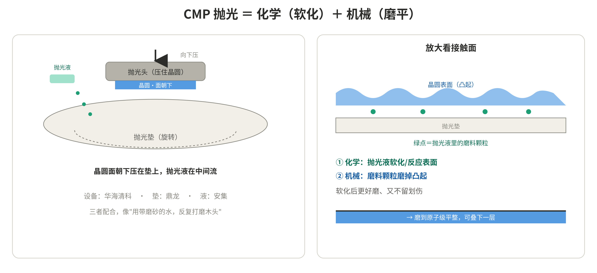
图 20 CMP 抛光原理：化学软化＋机械磨削，把坑洼表面磨到原子级平整
| 环节 | 公司 | 看点 |
| 抛光设备 | 华海清科（688120） | 国产 CMP 设备龙头，几乎包揽国产替代 |
| 抛光垫 | 鼎龙股份（300054） | 国产抛光垫龙头，全品类，打破杜邦垄断 |
| 抛光液 | 安集科技（688019） | 国产抛光液龙头，全球市占约 10%，自研磨料 |
5.2 第五道：清洗与检测（洗干净 + 验收放行）
这道是两个紧挨的动作。清洗：抛光会磨下大量颗粒、刻蚀/沉积也留残留，而一粒纳米级灰尘就能造成短路毁掉芯片，所以每道工序后都要用超纯水+化学清洗液反复冲洗——清洗其实贯穿整个流程（业内说“芯片制造有一半步骤在清洗”）。检测（量测/检测）：给这层“打分放行”，量关键尺寸 CD、薄膜厚度、套刻对准，并查颗粒/缺陷/短路；通过就放行、回到第一道盖下一层，不通过就及时返工报废，避免几十层白做。
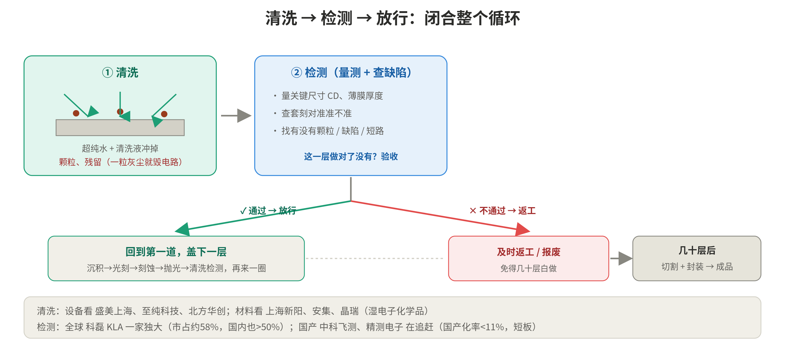
图 21 清洗与检测闭环：洗净→检测放行→回到第一道；几十层后切割封装成成品
闭环合龙：检测放行 → 回第一道盖下一层 → 五道工序再走一圈 …… 循环几十次叠成型 → 切割、封装 → 成品芯片。至此，硅片就变成了一颗真正的芯片。
| 环节 | 公司 | 看点 |
| 清洗设备 | 盛美上海（688082）/至纯科技/北方华创 | 国产清洗设备 |
| 清洗材料 | 上海新阳/安集/晶瑞 | 湿电子化学品 |
| 检测设备 | 科磊 KLA | 全球霸主，市占约 58%，国内也 >50% |
| 检测设备 | 中科飞测（688361）/精测电子 | 国产龙头追赶，前道量检测国产化率 <11%（短板） |
第六部分 总结：产业链地图、名词表与投资逻辑
6.1 五道工序 × 核心公司总表
| 工序 | 这一步在做什么 | 关键材料/耗材 | 代表公司 |
| 薄膜沉积 | 铺一层新材料（加法） | 前驱体、靶材、特气 | 北方华创、拓荆、雅克、江丰、中船特气 |
| 光刻 | 用光印出图案 | 光刻胶、光刻气、掩膜 | ASML、上海微电子、彤程、南大光电 |
| 刻蚀 | 刻掉多余部分（减法） | 刻蚀气体 | 中微、北方华创、中船特气、华特 |
| 抛光 CMP | 磨到原子级平整 | 抛光垫、抛光液 | 华海清科、鼎龙、安集 |
| 清洗与检测 | 洗净并验收放行 | 清洗液（湿电子化学品） | 盛美、上海新阳、科磊 KLA、中科飞测 |
6.2 名词缩写速查表
| 缩写 | 全称 | 含义 |
| PVD | Physical Vapor Deposition | 物理气相沉积（打靶溅射，用靶材） |
| CVD | Chemical Vapor Deposition | 化学气相沉积（气体反应成膜） |
| ALD | Atomic Layer Deposition | 原子层沉积（一次一层，最精准） |
| DUV | Deep Ultraviolet | 深紫外（193/248nm） |
| EUV | Extreme Ultraviolet | 极紫外（13.5nm） |
| CMP | Chemical Mechanical Polishing | 化学机械抛光（化学软化+机械磨平） |
| RIE | Reactive Ion Etching | 反应离子刻蚀（化学+物理） |
| CD | Critical Dimension | 关键尺寸（检测项） |
| PAG | Photo-Acid Generator | 光致产酸剂（光刻胶核心成分） |
| via | — | 通孔（连通上下层的垂直插销） |
| HBM | High Bandwidth Memory | 高带宽存储（3D 堆叠 DRAM） |
| TSV | Through-Silicon Via | 硅通孔（HBM 垂直连接） |
6.3 投资逻辑要点
最尖端、最卡脖子的是光刻：EUV 光刻机被 ASML 100% 垄断，最难国产的材料是 ArF/EUV 光刻胶（日本约占 90%）。
国产替代做得最好的是刻蚀：中微、北方华创绕开光刻机，成熟制程国产化率已达 50–60%。
材料/耗材类公司（雅克、中船特气、鼎龙、安集、上海新阳等）往往横跨多道工序、跟着开工率持续消耗，“业绩兑现最确定”——这正是原始研报把上游材料列为“订单能见度最高”的逻辑。
区分“设备”与“耗材”：设备（ASML、KLA、北方华创、中微）是一次性资本开支、有周期；耗材（前驱体、靶材、特气、光刻胶、抛光液、清洗液）是细水长流、确定性更高。
需求侧：存储（三星、长鑫等）与逻辑/GPU（英伟达→台积电）扩产都利好上游；国产 DRAM 市占率约 7.67% 对需求占比约 30–35%，扩产空间大，但兑现受技术、良率、竞争等制约，需理性看待。
风险提示：本文为科普与产业梳理，所涉公司仅为帮助理解产业链，不构成任何投资建议；市场格局、市占率与国产化进展会随时间变化，请以最新信息为准。
附录 资料来源
文中引用的具体数据与事实主要来源于以下公开资料（检索于 2026 年 6–7 月）：
1. 伯恩斯坦：中国半导体设备竞争格局（北方华创、中微、拓荆）
3. 卡位存储芯片核心材料，雅克科技前驱体业务2025上半年迎丰收
8. 常见 Dry etch gas 种类、用途、刻蚀材料及原理
11. ASML：新一代 High-NA EUV 已具备量产能力
12. ASML 2025Q2 业绩与 High-NA EUV 首交付
15. 日本供应占90%、国产率不足5%：中国光刻胶谁来破局
16. 国产光刻胶“生死局”（观察者网）